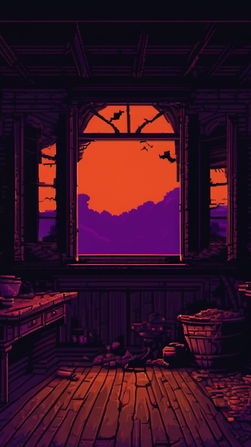
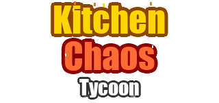
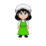

메인 메뉴 비주얼 에셋 (Phase 61)
컨셉 A "주방을 지키는 셰프" / SD Forge + PIL + PixelLab 혼합 파이프라인 / 2026-04-21
메뉴 배경

타이틀 로고

앱 아이콘 재기획 진행 중
옵션 A · PixelLab Pro
옵션 B · SDXL 단일 씬
통합 프리뷰 (MenuScene 360×640)
배경 + panel dark α=0.5 + 타이틀 로고 + 미미 스프라이트 (mimi_chef/south.png 재활용, NEAREST 필터)

360×640 합성 프리뷰 (버튼 미포함)
파이프라인 이력
Purposer → visual_change:art · pipeline:full
Planner → 스펙 확정 (버튼 y좌표 동결)
AD 모드1 → 에셋별 도구·프롬프트 결정
Coder 1차 → 3종 에셋 생성 + MenuScene 통합
AD 모드2 → REVISE: 미미 스프라이트 추가 필요 (컨셉 A 완성)
Coder 2차 → mimi_menu 추가 (x=308, y=200)
AD 모드3 → APPROVED (버전 텍스트 y=630 권장 반영)
QA → PASS (Playwright 23/23)
Doc Writer → PROJECT.md + CHANGELOG 갱신
Planner → 스펙 확정 (버튼 y좌표 동결)
AD 모드1 → 에셋별 도구·프롬프트 결정
Coder 1차 → 3종 에셋 생성 + MenuScene 통합
AD 모드2 → REVISE: 미미 스프라이트 추가 필요 (컨셉 A 완성)
Coder 2차 → mimi_menu 추가 (x=308, y=200)
AD 모드3 → APPROVED (버전 텍스트 y=630 권장 반영)
QA → PASS (Playwright 23/23)
Doc Writer → PROJECT.md + CHANGELOG 갱신